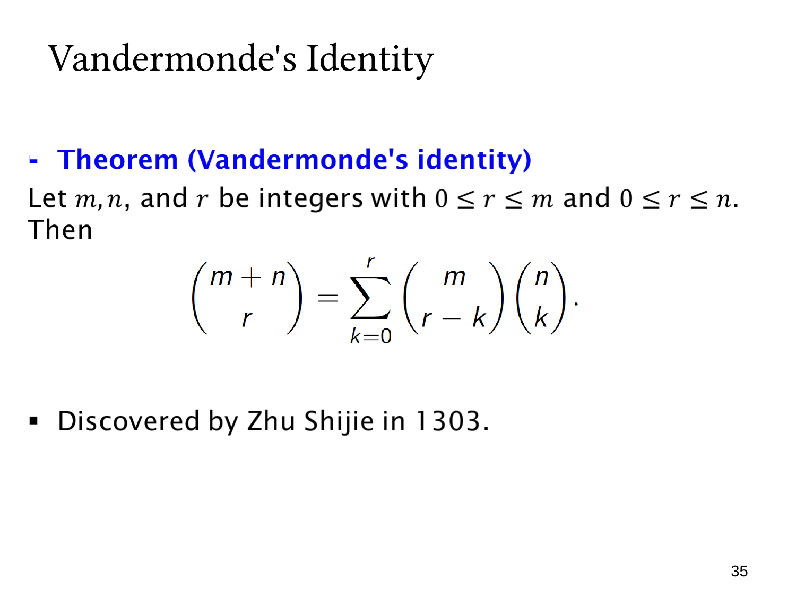

L1.7 · 第 35 页讲解原文
查看这一页课件

范德蒙德恒等式
这一页介绍 Vandermonde’s identity：
(rm+n)=k=0∑r(r−km)(kn).
课件给出的条件是 m,n,r 为整数，且 0≤r≤m、0≤r≤n。这些条件保证式中的每个组合数都在普通的选取范围内。
把一个有 m+n 个不同元素的集合分为两个不相交的组：第一组有 m 个，第二组有 n 个。要总共选出 r 个元素，左边直接给出选法数。
右边则按“从第二组选了几个”分类。若从第二组选 k 个，就必须从第一组选 r−k 个。两次选择独立，按 product rule 有
(r−km)(kn)
种。再把 k=0,1,…,r 的所有情况相加，就覆盖全部选法，而且每个选出的集合只属于一个类别。
例如 m=3,n=2,r=2：
(25)=(23)(02)+(13)(12)+(03)(22)=3+6+1=10.
若约定越界的组合数为零，这个恒等式还可扩展到更宽的非负整数范围。页末的朱世杰与年份是课件给出的历史注记；数学上要掌握的是“分组选择，再按各组选取数量求和”的结构。